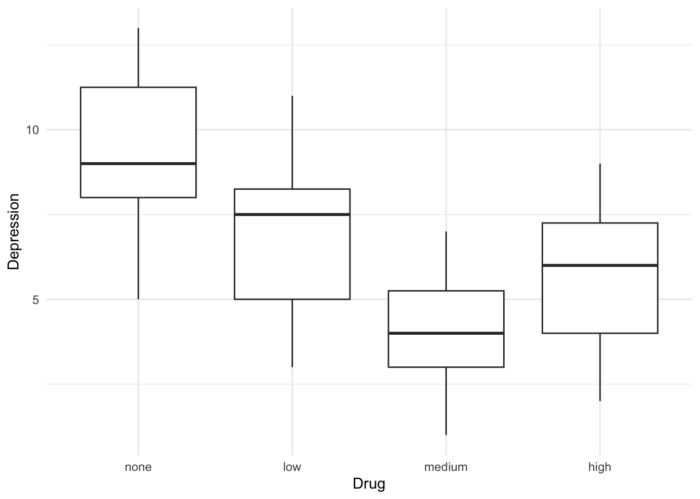

Warning: package 'ggplot2' was built under R version 4.5.2Module 5: Homework Starter File KEY
Load Packages
Read in the Data
The data is called depression_drug.csv. Read in the data using the read_csv() function. Name the data “depression_drug”.
The data has 2 columns:
- drug: the drug dosage (if any) that the patient received
- depress: participants’ score on a depression measure
Research Problem:
You are interested in the effectiveness of a new drug in treating the symptoms of depression. You randomly assign patients with depression into one of 3 treatment groups with different levels of the drug (low, medium, and high), and also one control group that only received a placebo. You then measure their symptoms after 4 weeks of drug treatment. You are interested in whether the drug is effective, and what level of the drug is most effective.
Exercise 1:
Recreate the (exact same) table from the homework instructions.
| drug | mean | sd | n |
|---|---|---|---|
| none | 9.60 | 2.26 | 20 |
| low | 7.00 | 2.18 | 20 |
| medium | 4.00 | 1.69 | 20 |
| high | 5.85 | 1.98 | 20 |
Exercise 2:
Recreate the (exact same) boxplot from the homework instructions.
Answer this question: What pattern do you notice in the data?

Exercise 3:
Run an omnibus ANOVA test to determine whether there is a relationship between drug and depression.
Answer this question: What does this tell you?
depression_drug <- depression_drug %>%
mutate(drug = as.factor(drug))
model <- lm(depression ~ drug, data = depression_drug)
anova(model)Analysis of Variance Table
Response: depression
Df Sum Sq Mean Sq F value Pr(>F)
drug 3 329.64 109.879 26.481 7.893e-12 ***
Residuals 76 315.35 4.149
---
Signif. codes: 0 '***' 0.001 '**' 0.01 '*' 0.05 '.' 0.1 ' ' 1summary(model)
Call:
lm(formula = depression ~ drug, data = depression_drug)
Residuals:
Min 1Q Median 3Q Max
-4.60 -1.60 0.00 1.55 4.00
Coefficients:
Estimate Std. Error t value Pr(>|t|)
(Intercept) 9.6000 0.4555 21.076 < 2e-16 ***
druglow -2.6000 0.6442 -4.036 0.000128 ***
drugmedium -5.6000 0.6442 -8.694 5.16e-13 ***
drughigh -3.7500 0.6442 -5.822 1.31e-07 ***
---
Signif. codes: 0 '***' 0.001 '**' 0.01 '*' 0.05 '.' 0.1 ' ' 1
Residual standard error: 2.037 on 76 degrees of freedom
Multiple R-squared: 0.5111, Adjusted R-squared: 0.4918
F-statistic: 26.48 on 3 and 76 DF, p-value: 7.893e-12Exercise 4:
Conduct post-hoc pairwise comparisons for depression scores across all levels of drug. Use a correction method to account for multiple comparisons.
emmeans(model, pairwise ~ drug, adjust = "bonferroni")$emmeans
drug emmean SE df lower.CL upper.CL
none 9.60 0.455 76 8.69 10.51
low 7.00 0.455 76 6.09 7.91
medium 4.00 0.455 76 3.09 4.91
high 5.85 0.455 76 4.94 6.76
Confidence level used: 0.95
$contrasts
contrast estimate SE df t.ratio p.value
none - low 2.60 0.644 76 4.036 0.0008
none - medium 5.60 0.644 76 8.694 <.0001
none - high 3.75 0.644 76 5.822 <.0001
low - medium 3.00 0.644 76 4.657 0.0001
low - high 1.15 0.644 76 1.785 0.4692
medium - high -1.85 0.644 76 -2.872 0.0317
P value adjustment: bonferroni method for 6 tests Exercise 5:
Run the regression again. This time, using your preferred method of dummy coding, test whether there is a significant difference between depression scores for each drug group (low, medium, high) and the none group. In this exercise you are being asked to compare low vs. none, medium vs. none, and high vs. none.
Write out the interpretation of each model coeffieient (do this separately from the summary).
Write an APA-style summary.
depression_drug <- depression_drug %>%
mutate(low.v.none = case_when(drug == "low" ~ 1,
TRUE ~ 0),
med.v.none = case_when(drug == "medium" ~ 1,
TRUE ~ 0),
high.v.none = case_when(drug == "high" ~ 1,
TRUE ~ 0))
model_2 <- lm(depression ~ low.v.none + med.v.none + high.v.none, data = depression_drug)
summary(model_2)
Call:
lm(formula = depression ~ low.v.none + med.v.none + high.v.none,
data = depression_drug)
Residuals:
Min 1Q Median 3Q Max
-4.60 -1.60 0.00 1.55 4.00
Coefficients:
Estimate Std. Error t value Pr(>|t|)
(Intercept) 9.6000 0.4555 21.076 < 2e-16 ***
low.v.none -2.6000 0.6442 -4.036 0.000128 ***
med.v.none -5.6000 0.6442 -8.694 5.16e-13 ***
high.v.none -3.7500 0.6442 -5.822 1.31e-07 ***
---
Signif. codes: 0 '***' 0.001 '**' 0.01 '*' 0.05 '.' 0.1 ' ' 1
Residual standard error: 2.037 on 76 degrees of freedom
Multiple R-squared: 0.5111, Adjusted R-squared: 0.4918
F-statistic: 26.48 on 3 and 76 DF, p-value: 7.893e-12Exercise 6:
Now, rather than comparing each drug dosage to no drug separately, let’s say we want to know whether the average of the three drug groups is different from the “none” group. What custom (“DIY”) contrast codes would you use to test this comparison? Make sure your contrasts follow the rules for planned contrasts (you can reference the lecture slides or lab handout for this info!).
You do not need to run/interpret this model (just writing out the codes is enough)!
Exercise 7:
Answer this question: What is the most important thing to remember about contrast codes?